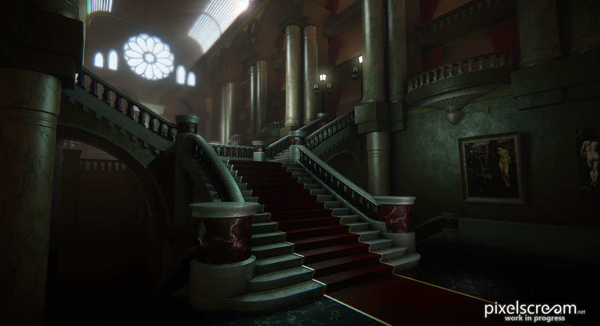
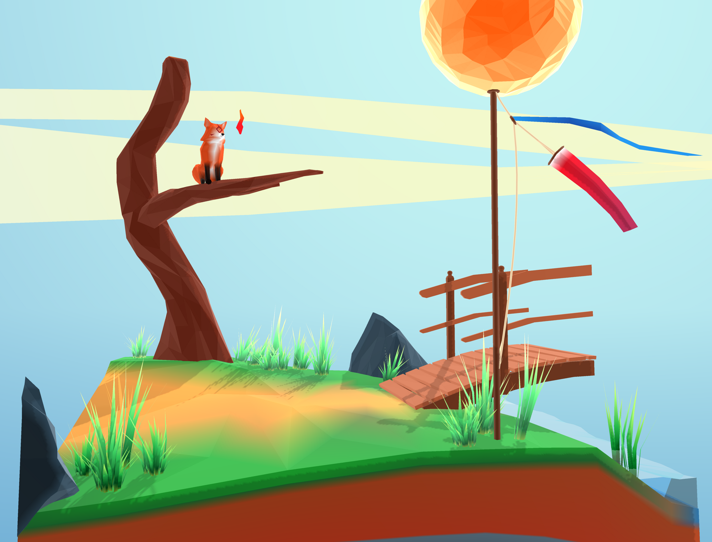
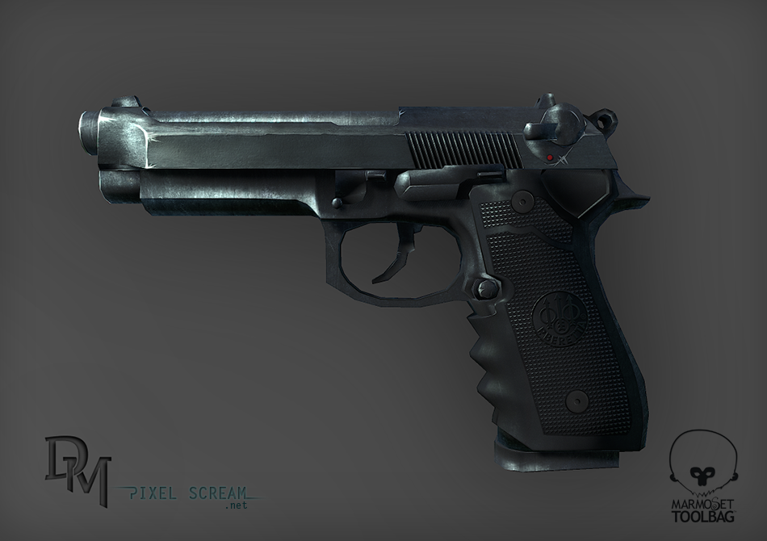

Opera House
Beaux-Arts style opea house presented in CryEngine
In hac habitasse platea dictumst. Phasellus tellus ante, luctus et feugiat ut, porttitor non massa. Morbi cursus libero quis ultricies efficitur. Etiam commodo finibus massa, non scelerisque ipsum finibus ut. Integer in nisl mauris. Sed sodales mi sit amet tortor dignissim, id imperdiet tortor molestie. Vivamus dictum elit id turpis mollis, quis elementum metus dapibus.
Fox Spirit
low poly/cubist Unity diorama
Quisque gravida ut erat at finibus. Donec ut convallis diam. Aliquam tincidunt eros sagittis aliquam fermentum. Nunc risus purus, mollis in est ut, tempus rhoncus tortor. Nulla facilisi. Phasellus eleifend magna sed porta elementum. Suspendisse efficitur dolor tortor, et auctor arcu rutrum ut. Sed venenatis, ipsum non mollis aliquet, mi urna tincidunt ipsum, sit amet dignissim est urna venenatis felis. Proin non porttitor odio. Pellentesque id mi scelerisque, vehicula lacus et, faucibus sem.


Beretta M9
a low poly Beretta M9 rendered in Marmoset
Quisque gravida ut erat at finibus. Donec ut convallis diam. Aliquam tincidunt eros sagittis aliquam fermentum. Nunc risus purus, mollis in est ut, tempus rhoncus tortor. Nulla facilisi. Phasellus eleifend magna sed porta elementum. Suspendisse efficitur dolor tortor, et auctor arcu rutrum ut. Sed venenatis, ipsum non mollis aliquet, mi urna tincidunt ipsum, sit amet dignissim est urna venenatis felis. Proin non porttitor odio. Pellentesque id mi scelerisque, vehicula lacus et, faucibus sem.

Script
I have had need to create quite a few MaxScript toolbars in my current position and thought it was about time I made a template, if only to stop myself going insane. The main basis of it is as follows
try(destroyDialog mainRollout)catch()
rootFolder = getFileNamePath (getThisScriptFilename())
sourceFolder = rootFolder + "source\\"
modulesFolder = "modules\\"
rollout mainRollout "Tool Bar" width:184 height:760
(
subRollout toolssub "" pos:[0,56] width:184 height:672
on mainRollout open do
(
modules = getFiles (sourceFolder + modulesFolder + "*.ms")
for i in modules do
(
fileIn i
rolloutName = getFilenameFile i
AddSubRollout mainRollout.toolssub (execute rolloutName)
)
)
)
createDialog mainRollout style:#(#style_toolwindow, #style_sysmenu, #style_minimizebox)
Above is the core of what you'd need to set this up for yourself, alternatively you can catch a fuller and fully open source version on Github by clicking here!
We also spend a tremendous amount of time going back and forth between 3Ds Max and engines and often need things exported in a particular manor, as such I've created an fbx exporting assistant which offers one click iteration on models. You can also grab that on Github here!
Dickie McCarthy
Environment and Technical Artist
Contact
contact@pixelscream.net
media icons
printable résumé
Core Software
3Ds Max
Unity
Cryeninge
Unreal 3
Substance Designer
Photoshop
3D Coat
Experience
Environment & Technical Artist at Real Visual
February 2014 - present
Freelance artist, at but not exclusively Ludophobia & Cityscape Digital
May 2013 - February 2014
BA Hons Computer and Video Games at Southampton Solent
September 2010 - September 2013
Jams and Demos
a small collection of game jams and demos I've been a part of which are still available online.
Global Game Jam '14 - Art, & Game Design
a local multiplayer beat em up in the vain of Smash Bros or Tower Fall which I was in love with at the time. download link
Brains Eden '13 - Character Art & Game Design
a skydiving arcade game where you have to balance risk and reward.
You can play the ridiculously simple 24 hour prejam here.
Fox Spirit - Art Jam
A ambiently moving art piece made in 24 hours.
Ludum Dare 28 - Everything
I thought I'd try it all in this solo jam, at the time I knew little to nothing about C# and it may show just a little. Atleast I can laugh at myself.
Thanks for checking out my work, I'd love to hear from you